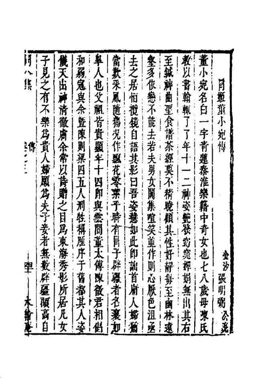
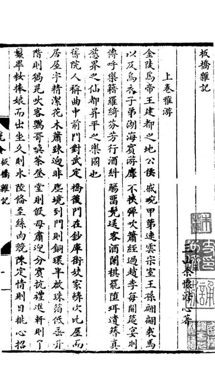
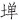
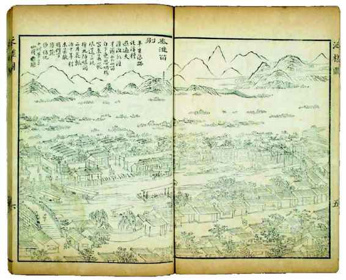
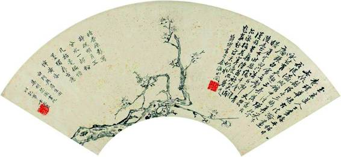
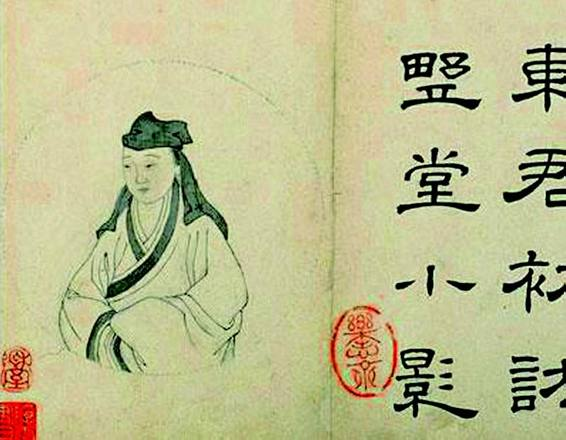
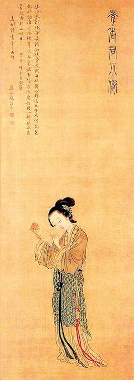
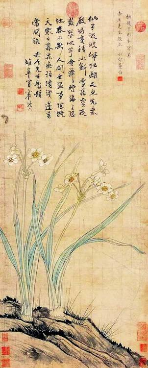

不过，如果只看到复社、旧院之间“狭邪”一面，则所见差矣。
庚午、南京、复社，这三个关键词相联，是有浓厚政治意味的。《思旧录》“周镳”条记道：
庚午，南中为大会，仲驭招余入社。[36]

《同人集•冒姬董小宛传》
冒辟疆晚年“取其故人投赠诸作”，编为《同人集》，所谓“同人”，多半是当年秦淮河畔的旧游。本篇董小宛传作者张公亮，与冒辟疆、陈则梁等数人是“狐朋狗友”，于冒董之恋可谓切近的在场者。

《板桥杂记》
余怀以将近耄耋之年写就的《板桥杂记》，而今似乎已成一篇花柳实录，只从窥淫的角度引起阅读兴趣。无人去思考，那颗古稀之心，何以被年少之际狭邪往事久久稽淹。
“大会”，是“金陵大会”；“招余入社”，组织、动员也。黄宗羲话虽甚简，我们却不难感受当时的紧锣密鼓。酒肆、寓所、游船、街头、妓院……为某日某件事，南京到处有人串联、拜访或邀约。那种气氛，古时少见，现代人反而不陌生——我们一般称之“闹风潮”或“闹革命”。或许，我的思考方式过多掺杂了现代生活的影响，但复社传递过来的信息，的确唤起了我对革命的联想。
茅盾回忆录“一九二七年大革命”一节，讲到热烈的革命气氛中，也飘散浓郁的荷尔蒙气息：流行“五分钟恋爱观”[37]，几位漂亮革命美人，“一些单身男子就天天晚上往她们的宿舍里跑，而且赖着不走”[38]。昂奋、激情似乎会传染，就连早有家室的茅盾自己，也不免心旌摇荡：“有一次，开完一个小会，正逢大雨，我带有伞，而在会上遇见的极熟悉的一位女同志却没有伞。于是我送她回家，两人共持一伞，此时，各种形象，特别是女性的形象在我的想象中纷纷出现，忽来忽往，或隐或显”。[39]这是大革命时期的广州、武汉和上海，而其风范，我们于明末的南京，好像亦觉眼熟。
革命与荷尔蒙，总是相互刺激。虽然名士挟妓在中国算是老套子，但此番秦淮河边的喧谑，应该越出了那种单纯的放浪形骸。我们读《同人集》，复社诸人当时的体验与后日的怀想，都不仅止于荷尔蒙发作，而明显是革命情绪与荷尔蒙并作。于情场得意中自我崇高，又在自我崇高中征服情场。政治正确为他们赢得了性的肯定，而性的肯定又令政治激情益发高扬。对崇、弘间的秦淮风情，看不到革命的罗曼蒂克，只看到偎红依翠，实际没有读懂那个时代。
从庚午年起，南京似乎就有明末“青年革命中心”意味。北方饥荒和战乱，离此尚远，京师政坛的犬牙交错，这里亦无踪影。思想和文化，南京一边倒地处在复社影响之下。阮大铖曾警告：“孔门弟子三千，而维斗等聚徒至万，不反何待？”[40]言复社势力之大，足以造反，意在危言耸听，但复社势力骇人却是真的。其所集会，规模动至上万人，山呼海啸。东南一带，文脉尽为所控，有人愤愤不平：“东南利孔久湮，复社渠魁聚敛”[41]，《思旧录》“吴应箕”条一笔记载，可证不虚：“复社《国表四集》，为其所选，故声价愈高。尝于西湖舟中，赞房书罗炌之文，次日杭人无不买之。坊人应手不给，即时重刻，其为人所重如此。”[42]几有一言兴邦的能量。南京既为留都，政治神经发达而密布。复社在别处影响，或多体现为文化追星与膜拜，在南京，则以政治能量表现出来。谈到南京那段时间，吴梅村说：
往者天下多故，江左尚晏然，一时高门子弟才地自许者，相遇于南中，刻坛，立名氏。阳羡陈定生、归德侯朝宗与辟疆为三人，皆贵公子。定生、朝宗仪观伟然，雄怀顾盼，辟疆举止蕴藉，吐纳风流，视之虽若不同，其好名节、持议论一也。以此深相结，义所不可，抗言排之。品覈执政，裁量公卿，虽甚强梗，不能有所屈挠。[43]
这些人，连举人都不是，然而，“执政”为所品评，“公卿”任凭短长。“虽甚强梗，不能有所屈挠”，是指对有很大权势的人，也不放在眼里。之能若此，其实并非因为“贵公子”身份，真正原因是身后有复社这一强大组织的背景。
说到这一点，倒也真显出明末的某种特别，亦即，言论和精英派别、组织的力量，对政治影响越来越大，政治话语权一定程度上独立于官职或行政权力。而这特点，始显于复社，其前驱东林仍是在朝政范围以内谋求对于君权的独立性，复社领袖与骨干大多都没有进入政坛，他们是通过思想、舆论，通过掌握文化领导权，获取实际政治影响力。在只有“庙堂政治”的帝制中国，这既是新的政治意识，也是新的政治现象。他们实际上是在搞一场革命，读一读黄宗羲《明夷待访录》学校篇，便知他们乃是有意为之，并非步入仕途之前的权宜之计，“必使治天下之具皆出于学校，而后设学校之意始备”[44]，复社就是这样的“学校”——一种置于政权之外而“品覈执政，裁量公卿”的独立政治力量。
他们试图挑战政治秩序，开辟从官场之外参与政治的新途径。我们不必说他们尝试的是民主政治，但他们的确想要打破官僚系统的政治垄断。他们的组织化，明确指向这意图。他们有组织的行动，则将这意图直接付诸实践。

《泛槎图》• 秦淮留别
夫子庙、贡院、两岸河房、游船⋯⋯秦淮胜景历历可见。题诗末句：“漂泊十年从来过，敢将姓字博笼纱。”笼纱，即制作灯笼外罩的绢纱，常代指灯笼，进而寓指出游。
晚明文人情态• 葛震甫像曾鲸绘
葛震甫（1567-1640）， 名一龙，号罳园居士，吴县人。屡试不售，游于白门，与四方名士结“秦淮诗社”，可谓复社之前秦淮风情的先驱。图上有范景文等名流题跋，王思任题曰：“诗人也，文人也，酒人也，而又所谓游侠人也。”

《暗香疏影》 卞玉京绘
吴梅村说卞玉京擅画兰，这一幅是梅。作者亲笔题记：“白门与眉生同集明瑟园画此以记事。”“白门”即南京，“眉生”为名士沈寿民表字。弘光后沈与徐枋、巢鸣盛并称三大遗民，也是黄宗羲一生最好的朋友。

《河东君初访半野堂小影》 余秋室临顾苓原作
河东君即柳如是，她好服男装，“常衣儒服，飘巾大袖”，反叛前卫。余秋室为乾隆间人，因嗜画仕女，世有“余美人”之称，陈寅恪在《柳如是别传》中说，“余美人”未中状元，是受累于画了柳如是。

《李香君小像》 清•陈清远绘
陈清远为清中期画家，值得品味的是，他想象李香君时眼前浮现的，是一种手不释卷的形象。

《玉肌冰清图》 董小宛绘、冒襄题
冒、董联袂赠友之作。纸本设色立轴，款识“抚赵子固本写呈 赤厓先生教正 小宛董白”，冒襄题诗并署“赤厓先生属题 雉皋冒襄灯下”。“赤厓先生”俟考。
关于组织起来，典型事例是桃叶渡大会。事在丙子（1636），而起于乙亥（1635）冬。丙子年，又逢大比，为了备考，举子们去年冬天就陆续来到南京，温习热身。魏学濂也在其中。奇怪的是，他在南京不敢抛头露面，和一个朋友在马禄街秘密租了间房子，隐身避迹。为什么呢？因为阮大铖之故。他的父亲魏大中，惨死党祸。天启四年，吏科都给事中职缺，阮大铖循例应补，且事先得同乡左光斗允诺支持，不意，东林大佬以该职重要，认为应安排同志任之，临时变卦，以魏大中顶掉阮大铖。此为阮大铖与东林反目之始。崇祯元年，昭雪期间，魏学濂千里赴京，伏阙陈冤，血书进奏，指阮大铖以私怨陷其父致死（其实并无实据），阮大铖就此名列逆案，废斥还籍，彼此怨仇益深。就在乙亥年，因“流氛逼上江”，阮大铖已从怀宁流寓南京。“怀宁（指阮大铖）在南京，气焰反炽。子一茕茕就试，传怀宁欲甘心焉”，好像到处打听魏学濂下处，意欲寻仇。冒辟疆从陈梁那里听说此事，当即往访。叩门之际，情形还颇为紧张，一番试探，知来者为友，魏学濂才敢出见。冒辟疆叫他们不要怕：“旧京何地？应制（科举）何事？怀宁即刚狠，安能肆害？”大家凑了一百多两银子，替魏学濂在桃叶河房冒辟疆寓所旁租房，这里“前后厅堂楼阁凡九，食客日百人，又在通都大市”，众目睽睽之下，又有冒辟疆守视，看阮大铖如何加害。纵如此，魏学濂“犹鳃鳃虑怀”，担惊受怕。事实证明，冒辟疆是对的。“场毕，果亡恙也。”魏学濂从联合起来尝到甜头，考试结束后，于观涛日“大会同难兄弟同人”。观涛日即八月十五，以扬州、镇江一带“秋月观涛”得名。“同难兄弟”，则是东林冤死诸臣遗孤，据冒辟疆说，只有“杨忠烈公（杨涟）公子在楚不至”。“一时同人咸大快余此举，而怀宁饮恨矣。”[45]
桃叶渡大会，大长志气，轰动一时。如果说，这件事基本还是被动防御，两年后《留都防乱揭帖》就是主动出击了。那是复社政治斗争史上辉煌一页，在南京人脉极广的阮大铖，居然被逼得遁形荒郊，不敢入城。历史上，揭帖事件有两个突出的意义：一、它的成功，完全是思想、舆论的成功，整个过程，复社学子手无寸铁，亦未以靠山为后台，仅仗秃笔击走阮大铖。二、表面看来，只是赶跑阮大铖，但我以为更重要的是第一次作为这样的实验，显示从精神和思想上组织起来，可以在权力之外单独形成社会改革力量，而这一点，跟三百年后火烧赵家楼的“五四”的发生，没什么两样，故而如果写中国的学生运动史，第一页应该从这儿写起。
诸般迹象显示，崇祯年间的南京城，是帝制中国一座非典型城市。而典型的帝制城市，当如北京那样，一切在体制内发生，哪怕变革也只能指望朝堂、官僚体系中的进步力量，那里的民间社会，看不见主动性，政治只是有权人内部的游戏。相形之下，此时南京，从传统角度说简直是令人陌生的城市。体制和官僚系统似乎失位，阮大铖广交政界，却无人替他出头，那些毛头学子，不但占领思想文化制高点、引领舆论，也在社会现实层面呼风唤雨、兴风作浪。它某些侧影，完全不像仅有“民氓”与“有司”的标准古代城市，两者之间似乎出现了第三者，一种不符合古代城市秩序与特点的新兴力量，而我们在近现代革命时期的城市，倒时常看见这样的自由的人流。